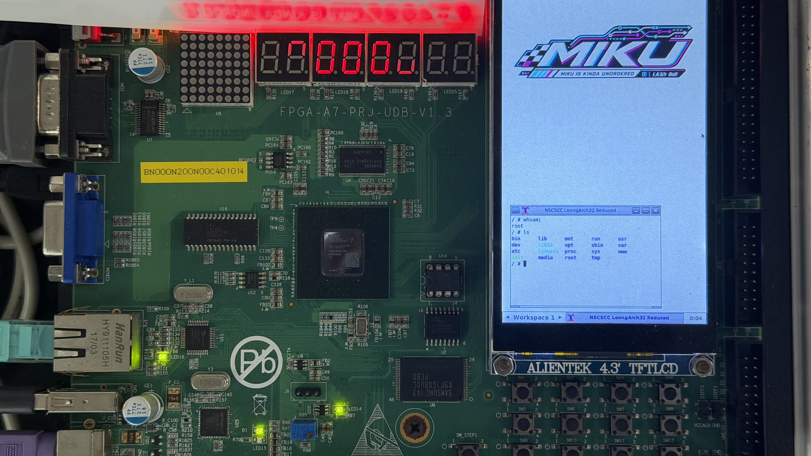

Team captain · National second prize · 2026
MIKU LA32R Out-of-Order SoC
A four-issue SpinalHDL processor and FPGA/Linux platform developed for the National Student Computer System Capability Competition, CPU Design Track (Loongson Cup).
My responsibility: team leadership, CPU performance and timing optimization, FPGA system integration, Linux 5.14 bring-up, kernel work, and the final system demonstration.

- Team captain
- Four-person team from ShanghaiTech University
- 4.831×
- System speedup over the official baseline
- 100 MHz
- Timing-closed Artix-7 implementation
- Second Prize
- National CPU Design Track, 2026
CPU performance and timing
MIKU implements the LA32R instruction set in SpinalHDL with a four-issue out-of-order pipeline. I worked across the microarchitecture and physical implementation boundary instead of treating frequency and cycle count as separate problems.
- Optimized load-store queue behavior, L1 data-cache access, branch prediction, and reorder-buffer timing paths.
- Integrated four fetch lanes, three-wide rename/dispatch/commit, four execution ports, five writeback paths, and a two-level cache hierarchy.
- Reached 1.579× average IPC and 4.831× system speedup relative to the competition baseline in the official 20-program evaluation.
- Closed the final Artix-7 implementation at 100 MHz with positive setup and hold timing margins.
Linux system integration
The final entry was a complete computer system rather than a standalone CPU. I integrated the processor, memory and peripherals with a Linux 5.14 and Buildroot software environment for the competition demonstration.
- Brought up and maintained Linux 5.14 on the custom LA32R SoC.
- Integrated a 480 × 800 framebuffer, X11 desktop, PS/2 and USB HID input, and Ethernet networking for the final system.
The public repositories include the SpinalHDL processor, FPGA platform, build environment, architecture documentation, and Linux source.
Competition result
GeekPie_ received Second Prize in the 2026 National Student Computer System Capability Competition, CPU Design Track (Loongson Cup). The final evaluation covered benchmark performance, operating-system execution, an on-site custom instruction task, and system demonstration and defense.